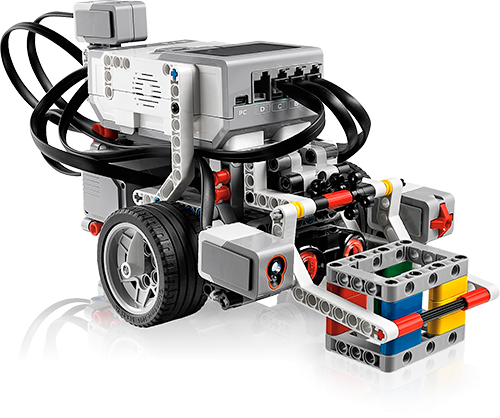
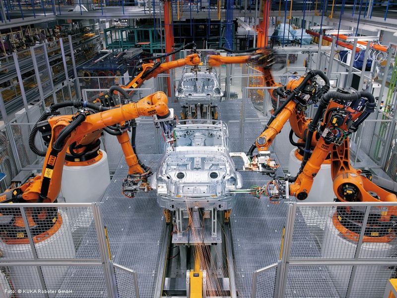

Что такое робототехника?
Робототехника - наука, занимающаяся разработкой автоматизированных технических систем.
Сама робототехника основывается на таких науках, как: механика, электроника, информатика и др.

Современная робототехника возникла на основе синтеза механики и кибернетики и дала толчок новому направлению их развития. Для механики это оказалось связано с многозвенными механизмами типа манипуляторов, а для кибернетики — с интеллектуальным управлением, которое требуется для роботов последнего поколения с искусственным интеллектом.
Робототехника на сегодняшний день является интенсивно развивающейся научно-технической дисциплиной, изучающей теорию, методы конструирования роботов и их практическое использование.
Также робототехника изучает способы автоматизации производства и научных исследований с применением роботов.
Уже сейчас в мире широко используется автоматизация технологических процессов на производстве при помощи робототехники. Это позволяет позволяет значительно повысить производительность труда, обеспечить стабильное качество выпускаемой продукции, сократить долю рабочих, занятых в различных сферах производства.
Роль роботов в автоматизированных системах и комплексах может быть различной — от основной, когда роботы осуществляют главные функции, до вспомогательной, когда роботы обслуживают основное или вспомогательное оборудование, выполняющее эти функции.
Системы и комплексы, автоматизированные с помощью роботов, принято называть роботизированными.
Роботизированные системы и комплексы, в которых роботы выполняют основные функции, называют робототехническими.